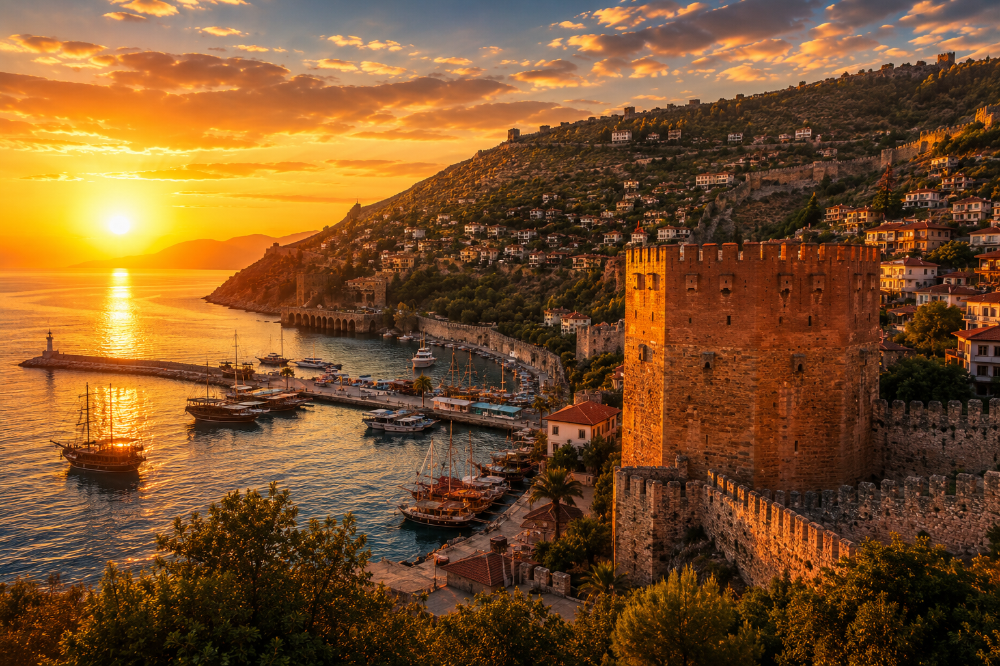
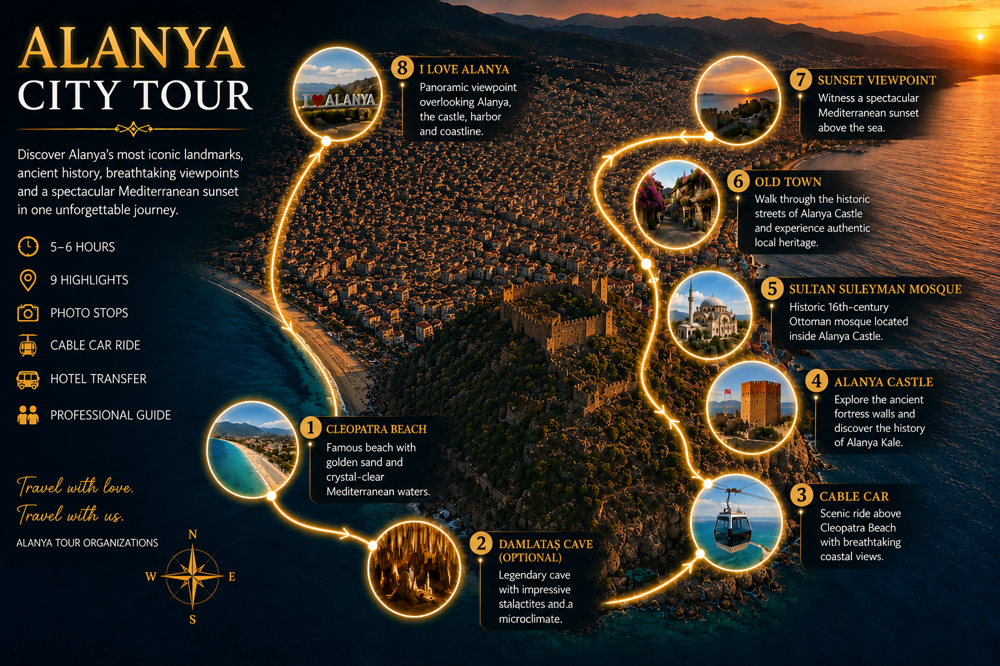

HISTORY & CULTURE • SUNSET EXPERIENCE
Alanya City Tour
Explore the most iconic landmarks of Alanya in one unforgettable journey, from Cleopatra Beach and Damlataş Cave to Alanya Castle, the Old Town and the famous I LOVE ALANYA viewpoint.
ABOUT THE TOUR
Alanya’s most iconic highlights in one sunset city tour
Alanya City Tour is the perfect way to discover the city’s most famous landmarks, historical atmosphere and breathtaking viewpoints in one comfortable evening program.
Your journey begins at the world-famous Cleopatra Beach, known for its golden sand and crystal-clear Mediterranean waters. You will then have the opportunity to visit the legendary Damlataş Cave, famous for its impressive stalactites and unique natural microclimate.
From Cleopatra Beach, the tour continues with a scenic cable car ride to Alanya Castle. At the top, you will explore ancient fortress walls, visit Sultan Suleyman Mosque, walk through the charming Old Town streets and enjoy a beautiful sunset over the Mediterranean Sea.
After returning by cable car, the tour finishes at the famous I LOVE ALANYA viewpoint. On the way, you will pass local neighborhoods and banana plantations, giving you a glimpse of everyday life in Alanya before the final panoramic photo stop.
TOUR DETAILS
What is included in the experience
Included
- Hotel transfer
- Professional guide
- Cable car ticket
- Travel insurance
- Photo stops
Extra Information
- Damlataş Cave entrance fee is not included
- Food and drinks are not included
- Personal expenses are not included
- Damlataş Cave visit is optional
Group Type
Comfortable guided city tour suitable for families, couples, groups and first-time visitors to Alanya.
Tour Program
- Hotel Pick-Up
- Cleopatra Beach
- Damlataş Cave optional visit
- Cable Car Ride to Alanya Castle
- Alanya Castle Exploration
- Sultan Suleyman Mosque
- Old Town Streets Walk
- Sunset Viewpoint
- Cable Car Ride Down
- Return to Cleopatra Beach Area
- I LOVE ALANYA Viewpoint
- Hotel Drop-Off
ROUTE MAP
Tour route according to the real program

PHOTO GALLERY
Highlights of Alanya City Tour


TOUR TIME
Evening sunset program
WHAT TO BRING
Prepare for a comfortable tour
- Comfortable walking shoes
- Camera or smartphone
- Sunglasses
- Hat
- Water
- Light jacket for evening
CHILD POLICY
Family-friendly experience
- Children 0–5 years: Free
- Children 6–11 years: Child price
- Children 12+ years: Adult price
PICKUP INFORMATION
Hotel transfer areas
Hotel transfers are available from Alanya, Oba, Tosmur, Kestel, Mahmutlar, Kargıcak, Konaklı, Payallar, Türkler, Avsallar, Okurcalar and nearby regions.
Exact pick-up time will be confirmed after booking.